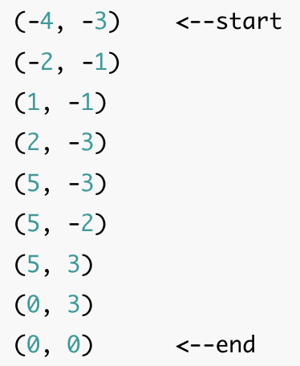
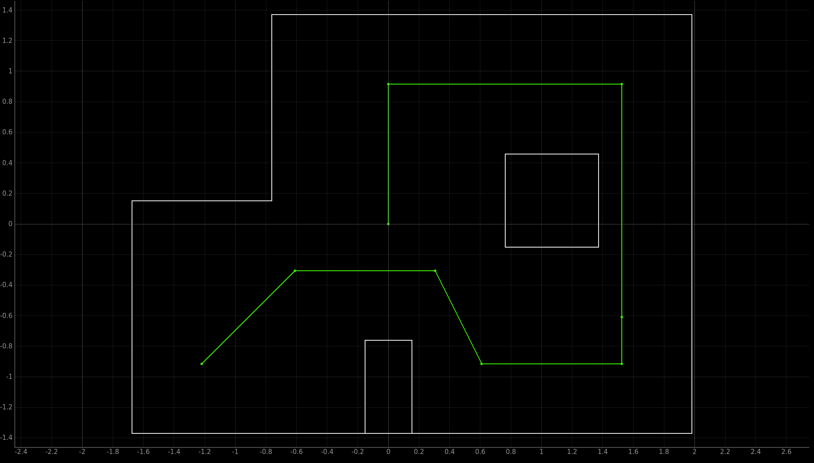
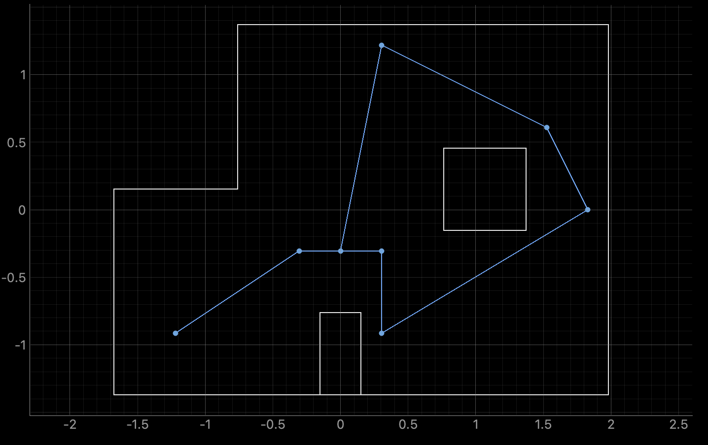
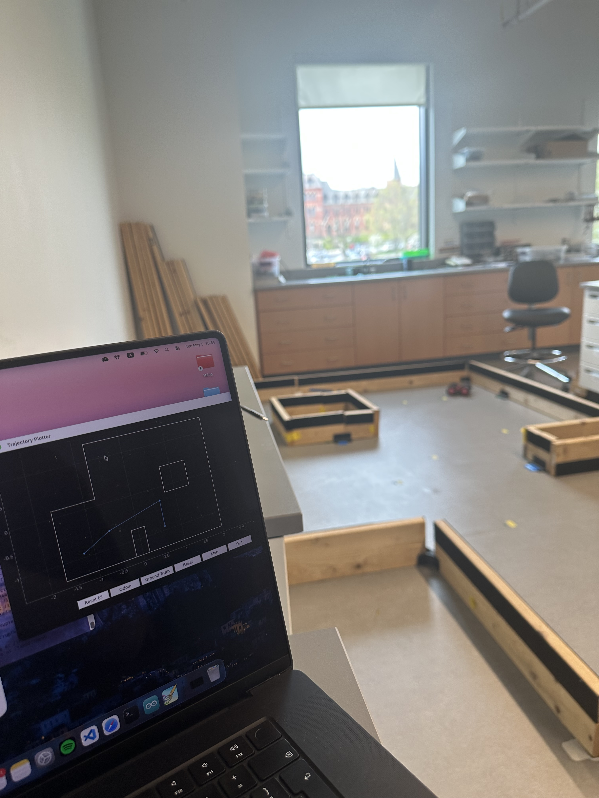
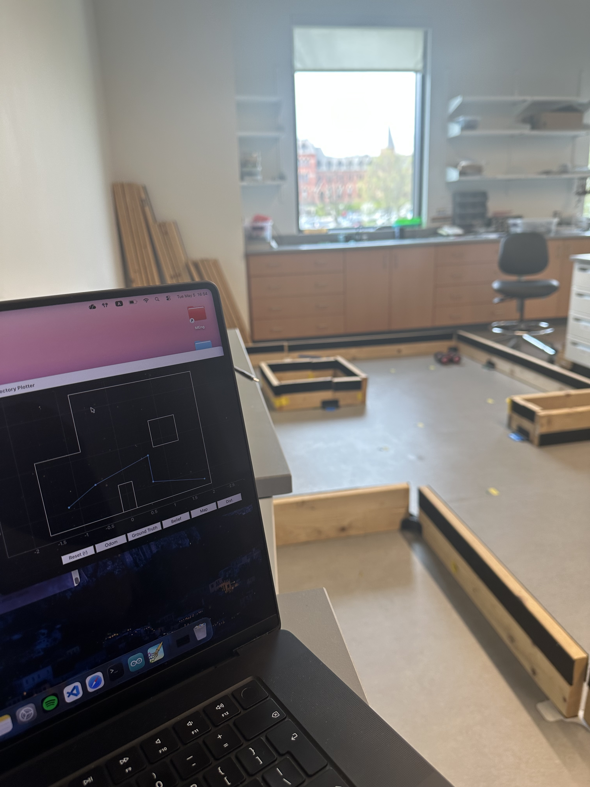
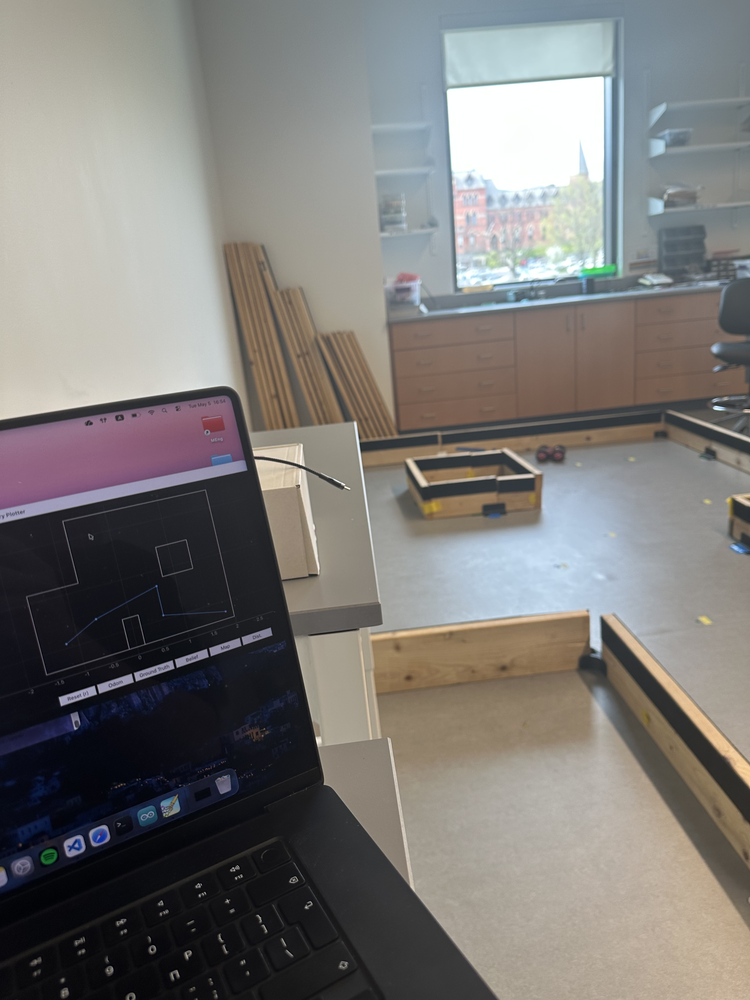
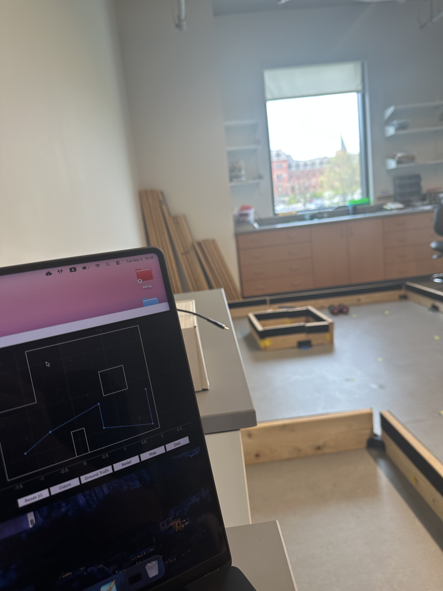
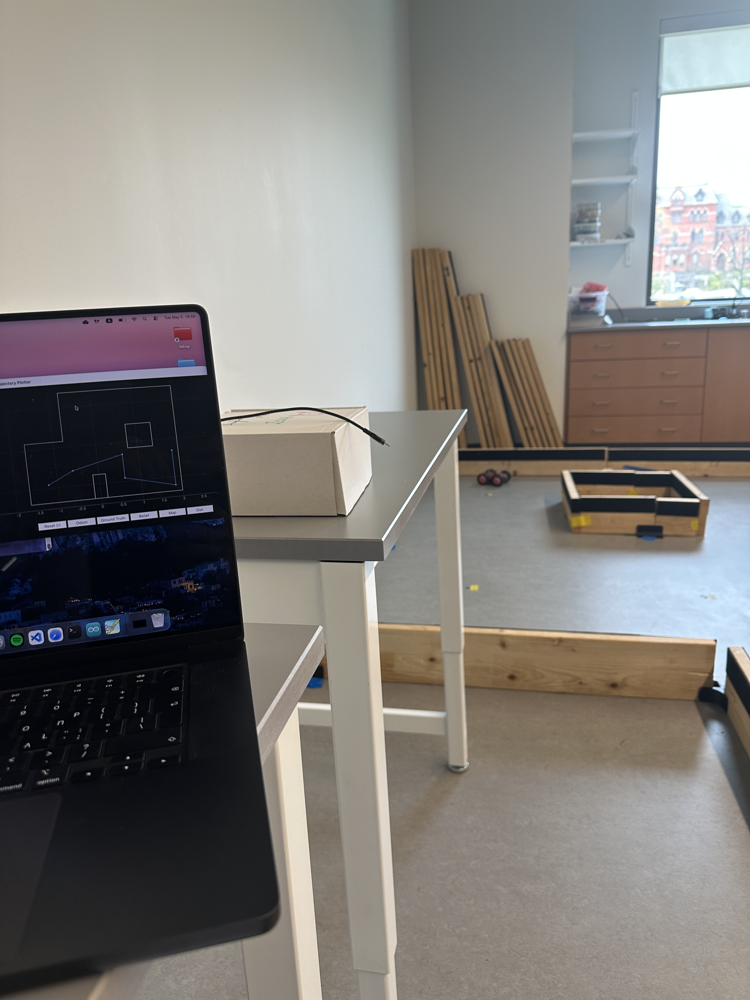
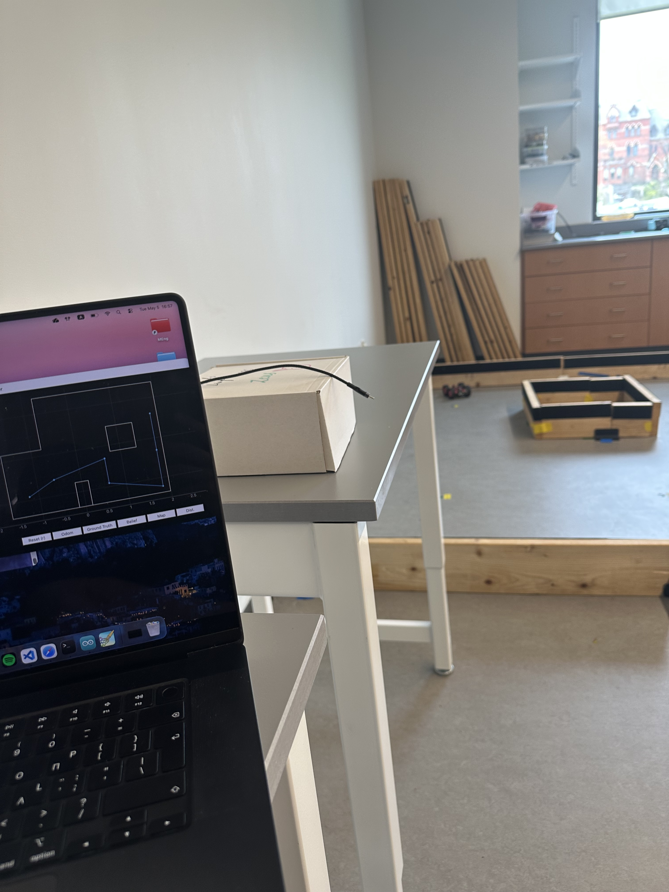

- Utilizing the update step of the Bayes Filter to perform localization on my robot car.
Objective
Lab 12 Sections
- Introduction
- Artemis Code
- Jupyter Code
- Execution
Introduction
This lab was very open ended. The goal of it was to have the robot navigate through the given waypoints to maneuver around the obstacle in the world.
As I have mentioned in previous write-ups, I really enjoy reusing past code, as I intentionally design it in a way so that it is useful for later (or at least try). More specifically, I used the following code exactly as it was made from previous labs.
Rotational and Linear Movement/Stopping of car Commands to have robot start moving and stopping with active breaking
Rotational PI To have the robot turn to specific angle increments around itself utilizing the Artemis' DMP to obtain yaw
Obtaining of Map readings Getting 10 ToF measurements for each angle increment, averaging them and sending them to jupyter
Localization For the robot to use the ToF measurements and get a belief of where it is in the world
I did write extra code, and modified the Rotational PI in an extremely minimal way that will be discussed below. The approach I had with going through this lab is that I wanted to determine how to have the car move approximately 1ft so that I can change it for different distances.
Then, I wanted to see if I could have the robot complete the navigation without any continuous sensory input. If I could turn time back (and have more of it), I would definitely add continuous ToF feedback to assist in determining the distance traveled (spoiler for later).
Rotational PI To have the robot turn to specific angle increments around itself utilizing the Artemis' DMP to obtain yaw
Obtaining of Map readings Getting 10 ToF measurements for each angle increment, averaging them and sending them to jupyter
Localization For the robot to use the ToF measurements and get a belief of where it is in the world
I would also change the way I handled my PI controlled rotation (explained why below).
The following waypoints were given to us that dictate the route shown below:


Artemis Code
As mentioned above, specific code blocks were used exactly as they were previously made. The only change to the PI rotation was that I changed the followin line:if(error_p_rot > 1 || error_p_rot < -1 ){, which pretty much allowed no error in the rotation, to:
if(error_p_rot > 2 || error_p_rot < -2 ){, which allowed for an error in what I defined as the point that the PI controller has reached the target angle.
To make all my previously written code usable from inside the notebook where the localization was run, I made the following two cases inside of Artemis' code:
caseALIGN_ROBOT : success = robot_cmd.get_next_value(goal_angle ); if (!success) return;axiallyRotateCar (goal_angle ); tx_estring_value.clear(); tx_estring_value.append("DONE"); tx_characteristic_string.writeValue(tx_estring_value.c_str()); break;
acuallyRotateCar, is the PI controlled rotation to the target angle. The case above, is meant to align the robot to a specific yaw value.
caseMOVE_ROBOT : success = robot_cmd.get_next_value(PWM ); if (!success) return; success = robot_cmd.get_next_value(DELAY_MS ); if (!success) return; success = robot_cmd.get_next_value(cali ); if (!success) return;moveCar (PWM );delay (DELAY_MS );stopFast (); tx_estring_value.clear(); tx_estring_value.append("DONE"); tx_characteristic_string.writeValue(tx_estring_value.c_str()); break;
cali is a callibration number to boost the left wheel's PWM in order for the car to move in a straight line. (Originally it was good, then it needed callibration after I had to resolder a new motor driver, and over time my car degraded even more)
I used this method in order to also use this case to determine the current calibration number, and delay for my car to move 1ft ahead in a straight line.
Note:originally, this was accurate when I got the numbers so I didn not add extra safeguards for determining how much the robot had traveled. However, after the battery levels dropped and I fully charged it, the robot was overshooting the distance a bit... That made it very hard for the robot to navigate the waypoints in the bottom right corner.
One way I managed to work around this was to comment out the following way point, remembering that the goal was to have the car to navigate around the obstacle and follow the general route, thinking that the robot would still go to the top right waypoint:
Everything else was taken care of from within the Jupyter Notebook.
One way I managed to work around this was to comment out the following way point, remembering that the goal was to have the car to navigate around the obstacle and follow the general route, thinking that the robot would still go to the top right waypoint:
waypoints_in_feet = [ (-4, -3), (-2, -1), (1, -1), (2, -3), (5, -3),#(5, -2) , (5, 3), (0, 3), (0, 0) ]
Jupyter Code
The first thing I had to do in order to utilize our localization code, was to be able to gain the believed location of the robot, after the update step of the Bayes Filter. I did this with:
robot_belief_meters = (loc.mapper.from_map(*get_max(loc.bel)[0])[0], loc.mapper.from_map(*get_max(loc.bel)[0])[1])robot_belief_feet = (round(robot_belief_meters[0] / 0.3048), round(robot_belief_meters[1] / 0.3048))
These, return a tuple (X , Y)
Then, I made a function to obtain the angle and the distance between two points, that would be the point of current position, and the point of the goal position:
defget_angle(p1, p2) : dx = p2[0] - p1[0] dy = p2[1] - p1[1] rads = math.atan2(-dx, dy) degs = math.degrees(rads) return degs % 360 defangle_and_dist (curr_point, next_point): # assumes robo is at 0 degrees dist = math.dist(curr_point, next_point) angle =get_angle(curr_point, next_point) if(angle>180): angle=angle-360 return angle, dist
I made it so that it assumed that the robot is at 0 degrees (aka aligned with Y axis of world as was defined in previous lab), becasue I had the robot go there after each localization ToF reading sequence (observation loop).
Also, made the angle=angle-360 if the angle was above 180, so that I would be able to test it more easily with prints for debugging. It will be shown later how it works.
Also, made the angle=angle-360 if the angle was above 180, so that I would be able to test it more easily with prints for debugging. It will be shown later how it works.
Next up, was to edit the Real Robot class. It already had the perform_observatoin_loop and the mapping_handler functions, so here are the edits colored:
class RealRobot():
def __init__(self, commander, ble):
self.world_config = os.path.join(str(pathlib.Path(os.getcwd()).parent)
, "config", "world.yaml")
self.config_params = load_config_params(self.world_config)
self.cmdr = commander
# ArtemisBLEController to communicate with the Robot
self.ble = ble
self.angles = []
self.distances = []
self.status = "WAITING"
async def perform_observation_loop(self, rot_vel=120):
self.ble.start_notify(self.ble.uuid['RX_STRING'], self.mapping_handler)
print("Started notifying MAPPING data for service: RX_STRING")
self.ble.send_command(CMD.OBTAIN_MAP_READINGS, "")
while(len(self.angles) < 18):
await asyncio.sleep(3)
self.ble.stop_notify(self.ble.uuid['RX_STRING'])
sensor_ranges = np.array(self.distances).reshape(-1, 1)
sensor_bearings = np.array(self.angles).reshape(-1, 1)
self.angles.clear()
self.distances.clear()
return sensor_ranges, sensor_bearings
async def align_robot(self, goal_angle=0) :
self.ble.start_notify(self.ble.uuid['RX_STRING'], self.execution_handler)
self.ble.send_command(CMD.ALIGN_ROBOT, f"{goal_angle}")
while(self.status != "DONE") :
await asyncio.sleep(1)
self.ble.stop_notify(self.ble.uuid['RX_STRING'])
self.status = "WAITING"
def move_robot(self, distance=1) :
times = int(distance)
remainder = distance - times
for _ in range(times):
self.ble.send_command(CMD.MOVE_ROBOT, f"100|395|14")
sleep(0.450)
if remainder > 0:
partial_distance = int(remainder * 395)
self.ble.send_command(CMD.MOVE_ROBOT, f"100|{partial_distance}|14")
sleep((remainder * 395 / 1000) + 0.150)
def mapping_handler(self, uuid, byteArray):
string = self.ble.bytearray_to_string(byteArray).strip()
A,D = string.split(",")
angle= float(A[2:])
distance = float(D[2:])
self.angles.append(angle)
self.distances.append(distance/1000) # to convert to m from mm
def execution_handler(self, uuid, byteArray):
string = self.ble.bytearray_to_string(byteArray).strip()
self.status = string
move_robot moves the robot 1*X ft in a "discretized" way of 1ft each time, and then moves the robot for the remainder of the distance (the decimal part) by using the MOVE_ROBOT command.align_robot makes the robot align with the target angle usign the ALIGN_ROBOT command.execution_handler allows the robot to update its status to "DONE" after the Artemis sends it, following a successful alightment with target angle.
The code to make the robot do everything is presented here:
current_loc = (-4,-3)# original starting point cmdr.plot_bel(current_loc[0]*0.3048, current_loc[1]*0.3048) # To print it in meters as it is in the localization notebook for index in range(len(waypoints_in_feet)-1): index +=1 print(f"**Current Location: {current_loc}") print(f"&&Going to: {waypoints_in_feet[index]}") dtheta_dxy = angle_and_dist(current_loc,waypoints_in_feet[index]) dtheta = dtheta_dxy[0] dxy = abs(dtheta_dxy[1])if(dtheta < 0): await robot.align_robot(360+dtheta) await robot.align_robot(360+dtheta) else: await robot.align_robot(dtheta) await robot.align_robot(dtheta) robot.move_robot(dxy) if(dtheta < 0): await robot.align_robot(359) await robot.align_robot(0) else: await robot.align_robot(0) await robot.align_robot(0) # Get Observation Data by executing a 360 degree rotation motion await loc.get_observation_data() # Run Update Step loc.update_step() loc.plot_update_step_data(plot_data=True) # (x,y) robot_belief_meters = (loc.mapper.from_map(*get_max(loc.bel)[0])[0], loc.mapper.from_map(*get_max(loc.bel)[0])[1]) robot_belief_feet = (round(robot_belief_meters[0] / 0.3048), round(robot_belief_meters[1] / 0.3048))current_loc = robot_belief_feet await robot.align_robot(359) await robot.align_robot(0)
I have
awat robot.align twice each time, because I observed that (the way I had set up my PI controller), sometimes, while rotating, the sensor might capture the angle where error=0 and assume the robot has reached the target angle, but the momentum moves the car away from it a bit.
The second call of that, is meant to ensure that it will go to the target angle, as the overshoot is so small, that the proportional error does not allow for overshooting the second time.
Additionally, when the angle was calculated above 180 (which I had made to be given as negative from the angle_and_dist function) the robot is first aligned to 359 isntead of 0 so that the proportional error is smaller and the robot doesn't overshoot as much. Then, the second call of
The final two calls:
await robot.align safely takes it to 0.The final two calls:
await robot.align_robot(359) and await robot.align_robot(0) at the end of the code block are that way, because at the end of the observation loop, the robot is at -20 degrees (aka 340).
Execution
After all this theoretical talk, it's time for the reveal of the reults. This is the video of a complete run with the code presented above. I had other runs with the extra waypoint as well as other small differences (PI controller without error "slack" - took a lot more time to converge to target angle but didn't have the overshoot problem as much), but since the videos are long, I am not including them.
For the same reason, please open up the video in a new tab by clicking the YouTube button on the bottom right corner of the video frame so that you can watch it in high resolution and faster playback speed. I am showing all the updates to the localization in real time as well as the beliefs.
One bad thing about my approach is that, since I use the points to guide the robot, because of the fact that the world is discretized into grids, the caluclated angle between current point and goal point can be off, due to the localization outputting a point that does not reflect the true location of the robot. That is clear after the last observation loop where the robot is believed to be between the 2nd and 3rd waypoints, when in reality it is closer to the goal waypoint.
That, combined with the noise in the movement of the robot, made for some not optimal navigation. Especially the angle, which can make the robot go to a substantially wrong position when moving relatively far.
That, combined with the noise in the movement of the robot, made for some not optimal navigation. Especially the angle, which can make the robot go to a substantially wrong position when moving relatively far.
Original Trajectory
Belief

Here are some sequential photos from an unsuccessful run where the robot can be seen going to the waypoint that I later commented out, as well as its belief on where it is.













Discussion
Lab 12 successfully utilized previously learned material to make robot navigate a real-world arena.